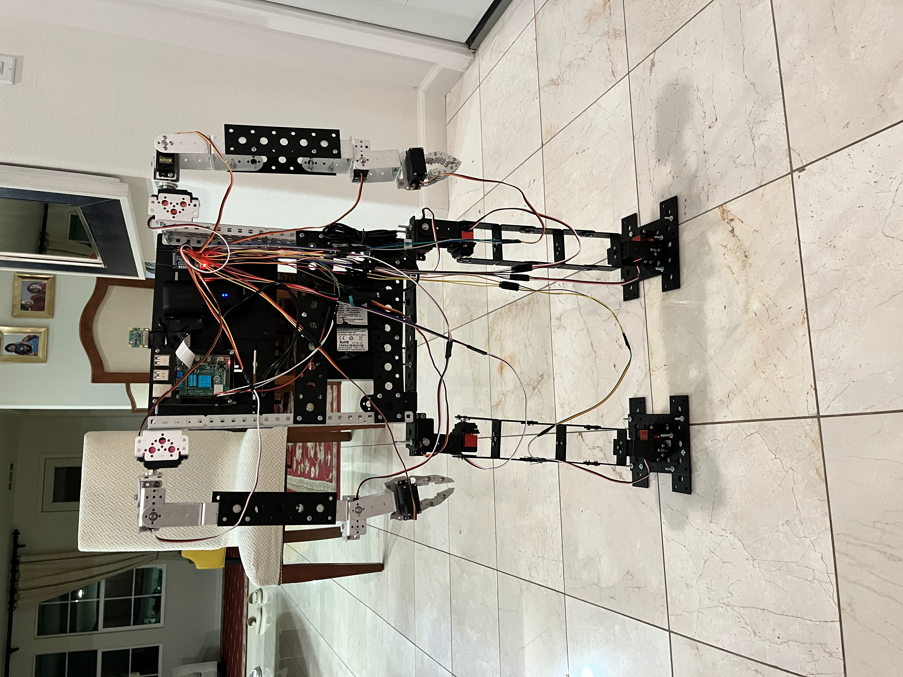

Overview
A humanoid prototype that combines sensing, mobility, visual processing, and suppression behavior to explore robotic assistance in fire-response scenarios.
Safety Robotics
Autonomous robot designed to detect fire-related hazards and support first responders in dangerous environments.

A humanoid prototype that combines sensing, mobility, visual processing, and suppression behavior to explore robotic assistance in fire-response scenarios.
First responders often operate in environments with heat, smoke, and structural danger. The project asks how a small autonomous system could reduce human exposure while gathering information or acting on simple hazards.
The system links onboard computation, sensors, servo-driven motion, and a task loop for detection, decision-making, and actuation.
Raspberry Pi, servo motors, structural frame components, wiring, sensors, and a custom humanoid assembly.
Computer vision and control logic using OpenCV-style visual detection, sensor reading, and coordinated actuator commands.
Recognized with 2nd Place in High School Mechanical Engineering at the Alameda County Science and Engineering Fair.
Humanoid systems expose the tradeoffs between mechanical stability, wiring reliability, sensing accuracy, and control timing.
This project connects robotics to human safety: machines that can help people in places where risk is high.
